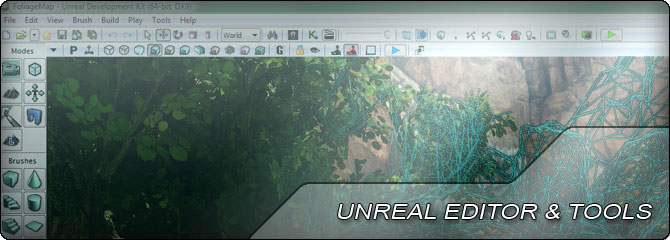

UDN
Search public documentation:
EditorAndToolsHome
日本語訳
中国翻译
한국어
Interested in the Unreal Engine?
Visit the Unreal Technology site.
Looking for jobs and company info?
Check out the Epic games site.
Questions about support via UDN?
Contact the UDN Staff
中国翻译
한국어
Interested in the Unreal Engine?
Visit the Unreal Technology site.
Looking for jobs and company info?
Check out the Epic games site.
Questions about support via UDN?
Contact the UDN Staff
UE3 Home > Unreal Editor and Tools
Unreal Editor and Tools

Unreal Engine 3 contains a suite of tools used to create and edit levels, import and organize art assets, create specialized content assets, and much more. The cornerstone of these tools is Unreal Editor, or UnrealEd. Unreal Editor is comprised of a level editor, a collection of browsers, and a set of specialized tools.
Virtually every developer working on a project will spend at least part of their time working inside Unreal Editor. Level designers obviously will use the level editor to create environments and worlds for the game to take place in. Content creators will import their assets and use the specialized tools to set them up for use int he game. Programmers will use test levels to ensure their gameplay code works as expected and may be tasked with extending the editor's functionality or adding new tools.
Being familiar with Unreal Editor and its tools is essential for any developer working with Unreal Engine 3.
Interface
- UnrealEd User Guide - Overview of using the level editor.
- Creating A New Map - Explanation of the New Map Screen and map templates.
- Main Editor MenuBar - Reference of the Unreal Editor menus and options.
- Main Editor Toolbar - Reference of the Unreal Editor toolbar buttons.
- Main Editor Toolbox - Reference of the Unreal Editor toolbox tools.
- Editor Buttons - Reference of the Unreal Editor controls.
- Editor Hotkeys - Reference of the Unreal Editor hotkeys.
- Viewport Toolbar - Reference of the Unreal Editor viewport toolbar.
- View Modes - Descriptions of the viewport display modes.
- Show Flags - Descriptions of the various visibility flags.
- Color Picker - Reference for the tool used to set color properties.
- Property Window - Reference for the Properties Window and its features.
- Play In Editor - How to use the various methods of playing levels within Unreal Editor.
- Geometry Mode - Guide to using the geometry mode tools for BSP.
- Terrain Mode - Legacy outdoor terrain system.
- Mesh Paint Mode - Overview of the system for painting mesh vertex colors.
- Static Mesh Mode - Guide to using the Static Mesh Mode for placing meshes.
- Landscape Mode - Current system for creating large outdoor terrains.
- Foliage Mode - Tool for painting instanced faliage and decoration meshes in levels.
- Editor Console Commands - Reference of the console commands for use in UnrealEd.
- Map Errors - Reference of error message displayed after a map check.
- ClipPad - Storing cut/copy/paste operations in named slots for reuse in UnrealEd.
- Content Browser Database - Guide to setting up the Game Asset Database.
- SCC Integration - How to set up source control integration within Unreal Editor.
- Editor Package Save Procedure - How to save packages in UnrealEd.
Browsers
- Actors Browser Reference - Lists Actor classes for adding to maps.
- Attachments Browser Reference - Editor for visually creating attachments between Actors.
- Content Browser Reference - Browser for creating, viewing, modifying content assets.
- Layers Browser Reference - Organizing Actors in maps into layers for selection and visibility.
- Level Browser Reference - Lists levels, persistent and streaming, for selection, editing, and visibility.
- Scene Manager Reference - Lists all Actors in the current level for selection and editing properties.
- Referenced Assets Browser Reference - Displays assets referenced by the selected Actor.
- Texture Stats Browser Reference - Displays statistics about texture usage.
Editor Tools
- AnimSet Editor User Guide - Viewing and editing Skeletal Meshes, Animations, and Morph Targets.
- Anim Tree Editor User Guide - Viewing and editing animation blending through animation trees.
- Asset Consolidation Tool - Tool for consolidating multiple identical assets into one.
- Reference Tree Tool - Tool for viewing assets referenced by an asset.
- Bulk Import - Guide to bulk importing content into UnrealEd.
- Cascade User Guide - Viewing and editing particle effects.
- Kismet User Guide - Creating gameplay through visual scripting node-based networks.
- Material Editor User Guide - Creating shaders to apply to surfaces through node-based networks.
- Material Instance Editor User Guide - Editing parametrically driven Material Instance Constants.
- Matinee User Guide - Creating animated sequences in maps for gameplay and cinematics.
- PhAT User Guide - Setting up rigid body physics for Skeletal Meshes.
- Post Process Editor User Guide - Creating post process visual effects through node-based networks.
- Static Mesh Editor User Guide - Viewing and editing Static Meshes, Collision, and UVs.
- SoundCue Editor User Guide - Creating procedural sound assets through node-based networks.
- Terrain Editor User Guide - Editing terrains to create outdoor environments.
Engine Tools
- UnrealConsole - Guide to using the UnrealConsole tool.
- UnrealFrontend - Guide to using the UnrealFrontend utility (formerly CookerFrontEnd).